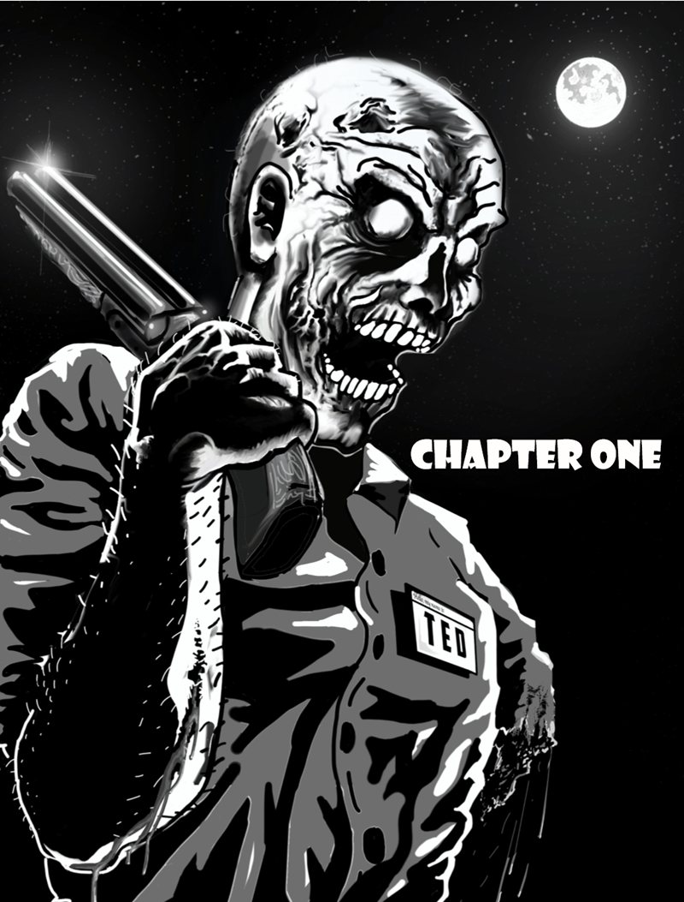

Dead Men Walking
Homo homini lupus est. A man is a wolf to another man.
Hordes of zombies—what survivors now call the Infected—shamble the once-busy streets. Among the ruins, survivors compete for resources. Some band together and form small communities seeking to somehow prosper. Others prey upon their fellow survivors. Trust is hard to come by.
Will you form a community to protect your fellow survivors and work together, or turn raider, or worse?
Requires Old-School Essentials.
Hope versus Despair
The struggle for human survival is more than just base subsistence. Human beings need something to live for. When all hope is lost, so is the survivor.
No two outbreaks alike
Pick or randomly roll the cause of the apocalypse and the breed of Infected your players face. Each campaign gets a different origin, different adversaries and different possible resolutions, so Dead Men Walking stays fresh over many adventures.
Zombie Slayer
Against the Infected, an attack roll of 20 or higher destroys the target instantly, and the Infected keep coming: the player may roll again against the next one in range. Brutal, cinematic, and very old-school.
Heroic Sacrifice
It’s a harsh world, but on occasion a character can lay down their life to save others: holding off the horde so the rest can escape. And on a natural 20, somehow, despite the odds, the character survives.
The alignment of survival
An optional alignment scale from −3 to +3 tracks every selfish act and every sacrifice. Close the door on an ally, or go back for the straggler… and the survivors around you will remember.
Everything You Need to Survive
- Introduction & 13 Character Classes6
- Equipment, Weapons & Vehicles32
- Bestiary, the Infected & Causes of the Apocalypse51
- NPCs68
- Encounters: 100 Random Encounters, Locations, Strongholds & Settlements85
- Surviving: Insanity, Advancement, Resources & a Sample Campaign122
The 13 classes

Meet Ted
A short, silent animation of Tristan Gilliss’s chapter-one illustration.
Character Sheets
Every copy of Dead Men Walking includes three character sheets: a printable sheet, a fillable sheet, and a fillable sheet with a photo slot for your survivor. Already own the book? They’re waiting in your DriveThruRPG library.
The Survivors Behind the Book
Writers Dean Leonard, Travis S. Delaney, John R. Brennan
Creative consultation H.P. Crowley, Travis S. Delaney, Sophia Paolillo
Editors John R. Brennan, Dean Leonard
Graphic designer John R. Brennan
Cover art Dean Leonard via ArtStation and Midjourney
Illustrations Dean Leonard via ArtStation and Midjourney AI; “Ted” by Tristan Gilliss; and licensed stock art
Designed for use with Old-School Essentials. Old-School Essentials is a trademark of Necrotic Gnome. The trademark and Old-School Essentials logo are used with permission of Necrotic Gnome, under license.